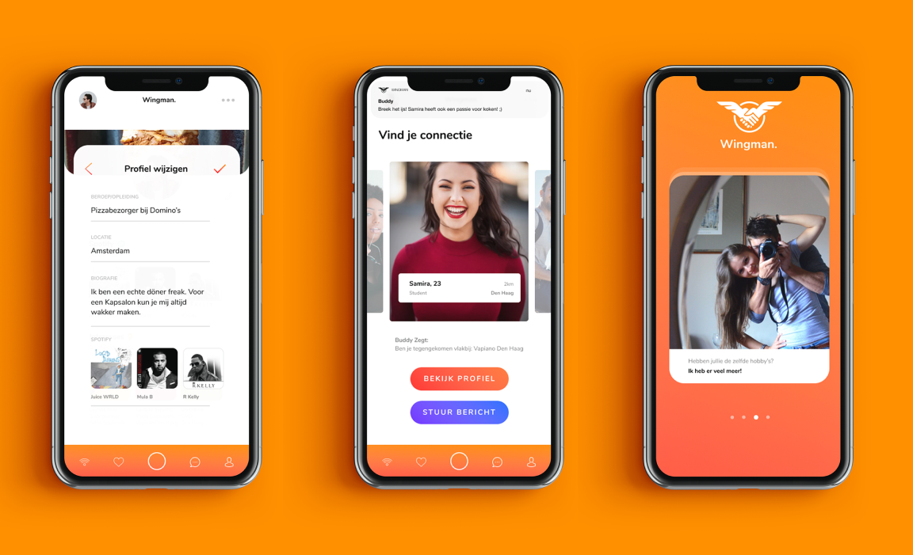
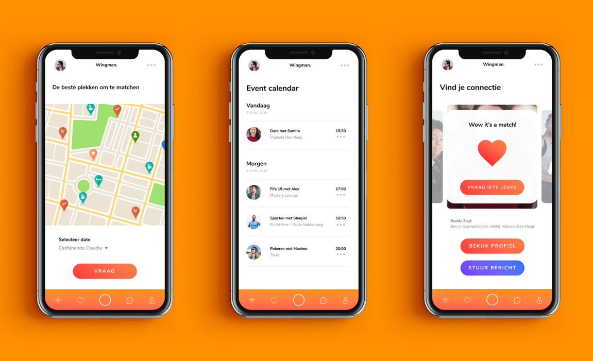

-
- 
- 
-
Issue
There are few differences between available dating applications when matching users, as users are often judged on their photos. There is insufficient insight into a new way of dating, which focuses on aspects other than visual material. There is also insufficient insight into the functional possibilities of sensors in a smartphone, this also plays a role in the research.
-
Objective
An objective has been formulated based on the problem definition. This objective serves as a guideline within the project so that it is clear to everyone who is working towards it. The objective formulated on the basis of the problem statement is as follows: “Providing insight into new ways to match users with the same interests. This takes into account the functional possibilities of sensors in a smartphone, with regard to the experience of users of a dating application. These sensors must contribute to the match process. ”
-
Research Question
A research question has been formulated based on the problem definition and the objective. The research question formulated on the basis of the problem definition and objective goes as follows: “What are the functional possibilities for the target group while using a dating application with a focus on the experience of the users.” The target group consists of both men and women aged 18 to 25 who are looking for users with the same interests.
-
Conclusion
The app’s prototype represents the research and answers the main question. An application with more functional possibilities has been made for the target group with the focus on the perception of the users. The application uses location and artificial intelligence sensors. The end product has achieved the objective of this project.
-
Feedback
I cannot give enough compliments about your work! This could be presented like this by a real company. If this were a pitch presentation, you would have won anyway! ~ Client Jungleminds